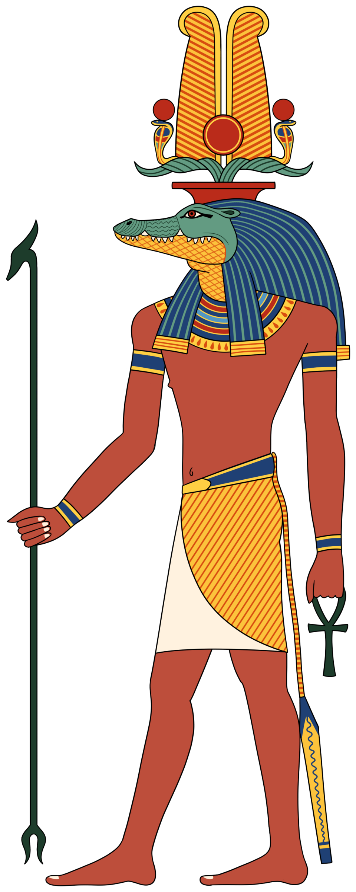

Кто такой Собек
Собек — крокологоловый бог воды, силы и плодородия: нильский крокодил для египтянина был одновременно ужасом реки и её хозяином. Логика та же, что с кошкой и львом: живое существо, сильнее тебя, становится божеством, которому можно «перечислить» свой страх культом. Собек — «Владыка вод», «тот, кто слушает слова» (в тексте «Заклинаний против крокодила» его умилостивляют, чтобы не утащил), бог-воин («его когти — ужас»), и одновременно — целитель и защитник: амулеты Собека носили против крокодилов и «всего злого, что приходит из воды».
Его главные города: Шedet (Крокодилополь, совр. Эль-Файюм) в оазисе Файюм и Па-Собек (Ком-Омбо) на юге, где Нил омывает оба берега. В Файюме Собека связывали с озером Морис и с мифом: он выплыл из первовод Нун и помог Исиде спасти младенца Гора, пронеся его по болотам на спине — за что стал «спутником Гора» (в Ком-Омбо — Собек-Ра «гармоничного сердца»).
Иконография
Собек — человек с головой крокодила (рыло длинное, зубы «ровные ужасы»), часто с рогами и солнечным диском: как Собек-Ра он — «тот, кто в воде и тот, кто в огне» — солнечная форма: «Собек-Ра, дающий свет». В руках — анх и уас; иногда — на груди урей. В храмах его «дом» — тёмные святилища с нишами для мумий крокодилов, а вокруг — бассейны: Геродот и Страбон описывают ручных «божественных» крокодилов с серьгами в ушах, которых кормили жрецы и поили вином.
Крокодильи некрополи
В Ком-Омбо («ком-омбо» — «город»; двойной храм Собека и Гора-Древнего, уникальный «два в одном»: две оси, два святилища, две колоннады, зеркально) при раскопках нашли крокодильий некрополь: сотни мумий крокодилов — от новорождённых до трёхметровых, некоторых — с детёнышами внутри («в чреве» мумифицировали выводок). В Мединет-Мади (Файюм) и Тун-эль-Гебель — то же. Крокодилов бальзамировали как людей: повязки, маски, саркофаги с росписью; «умерщвлённый Собек» становился подношением — «живому богу» адресовали мумию его же вида. Греки, прибывшие в Файюм, поначалу думали, что египтяне «взбесились»: кормить крокодилов и хоронить их по-царски — для чужого глаза безумие, для своего — богословие.
Собек и царь
В Среднем царстве фараоны XII династии (Аменемхеты, Сенусерты) обожали Файюм и Собека: «Собек-Хер» — тронное имя? (Собекнеферу — царица-регент начала XVIII дин. — «красота Собека»). Бог-крокодил давал династии образ «сильной руки» — и хозяйственный: мелиорация Файюма превратила озеро в пашню, а Собека — в гаранта урожая. В Ком-Омбо стены показывают фараона «подношающего» Собеку и Гору одинаковые дары — двойной храм как двойная легитимность: сила воды + царство Хора.